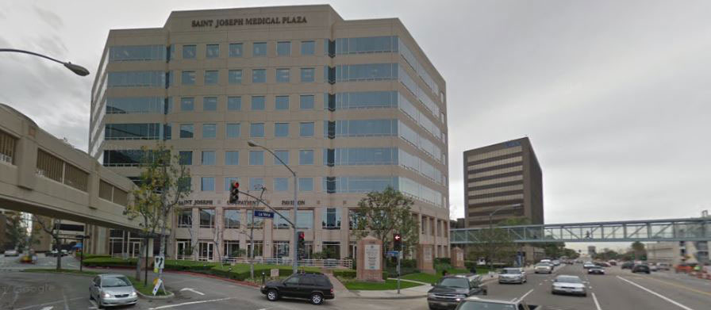
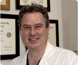

Thoughtful dentistry.
Detailed by design.
Prosthodontic, implant and aesthetic dental care, with an in-house laboratory and a personal approach to planning your treatment.

Suite 530 · Orange, CA 92868
Specialist focus.
A personal connection.
At Pavilion, the conversation starts with you — your questions, your priorities, and the dental care you’re considering.
Dr. Daniel Kantarovich’s practice focuses on prosthodontics, implant dentistry and aesthetic rehabilitation. The office’s own laboratory and dental technician are part of that approach.
Get to know Dr. KantarovichLet’s explore the possibilities.
Start with the area you’d like to discuss. Your consultation is the place to ask questions and understand your options.
Questions about replacing missing teeth?
The practice offers implant dentistry, including restorative and surgical care. Talk with Dr. Kantarovich about the options available to you and the planning involved.
Discuss dental implantsBegin the conversation
Your goals, the treatment options, and what the next steps could involve.
Suitability is assessed by the dentist.Care with form and function in mind.
Explore crowns, dentures and prosthodontic care with Dr. Kantarovich. A consultation gives you time to discuss your questions and a plan for your individual needs.
Discuss restorative careAn in-house laboratory
The practice has its own laboratory and dental technician.
Treatment is planned for each patient.Tell us what you have in mind.
The practice lists veneers, cosmetic bonding, whitening and Invisalign among its dental services. Ask about the options appropriate for your smile and your priorities.
Discuss aesthetic careA conversation first
Understand the choices before deciding on your next step.
Individual treatment advice comes from your dentist.
YOUR PROSTHODONTISTDaniel Kantarovich,
DDS
Pavilion Dental Group
Orange, California
Experience behind
the conversation.
Dr. Kantarovich earned his DDS at The Ohio State University College of Dentistry, where he also completed an advanced prosthodontic residency.
His private practice in Orange focuses on prosthodontics, implant restorative and surgical dentistry, and aesthetic rehabilitation.
Thoughtful work, close at hand.
The practice’s in-house laboratory and dental technician are a distinctive part of Pavilion’s approach to restorative care.
Make time
for your questions.
Contact the practice to arrange a consultation and confirm appointment availability.
(714) 953-1000 ext. 2drk@drksmiles.com1140 West La Veta Avenue, Suite 530Orange, CA 92868Get directions
Please call the office to confirm visiting hours.
A simple consultation request.
Try a sample request. Nothing is sent or saved, and this does not book an appointment. Use example contact details.
Sample request complete. Nothing was sent, no appointment was booked, and your example details have been cleared.